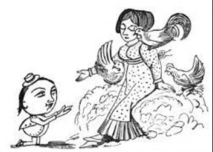
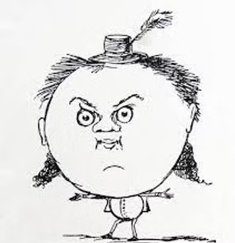

Junked for You, The Courtship of the Yonghy-Bonghy-Bò

“On the Coast of Coromandel
Where the early pumpkins blow,
In the middle of the woods
Lived the Yonghy-Bonghy-Bò.”
Edward Lear’s Nonsense Song, The Courtship of the Yonghy-Bonghy-Bò has recently been accused of Edwardian obscurity, an odour of the farmyard, and being unworthy of Third Millennium poetasters. We offer it here in up-to-date dress followed by the original of 1877, now adrift in the public domain.
Bò’s Heartbreak Kick in the Nethers
I was getting by conning my way as an odd job electrician. Bent over, patching up a bright-idea neon gimmick on the front of a mahogany bar, I got pushed out of the way. The dude had been taking on afternoon ballast in the medium-sleaze joint. He kicked over my tool box. Then he pushed me again as if I was bacteria. With a disgusted look at me, he said, “Shift your balloon head, Beau.”
I looked at him surprised. The pimp exhaled hair oil and wore a glossy three-piece with firecracker necktie. I glanced at the bartender who’d been matey. His nod to me said you gotta swallow it.

“Yeah, I said Beau,” said Pimpo. “That’s what Frenchies call a good-looker like you, B-E-A-U.”
Then he spit a laugh out from between pointy teeth.
It wasn’t the first time my head had been called a balloon. It came that way, XL. And I’m used to being ugly with my collapsed stand-in for a body. I picked up my spilled tools, one by one, and had the hammer in my hand.
“Okay, pumpkin head,” he said, “that’s spelled B-O for slow goers with dead-fly pins.”
I watched his teeth sharpen for another laugh and, taking aim at his tongue, hit him with the hammer.
The bartender put his hand to his own mouth as if I’d hit him and said, “Mistake, Buster. He’s mobbed up.”
I had my pliers in my hand and was going to dig in his mouth full of blood.
“Run,” said the bartender. He was feeling around in his own mouth.
“Disappear,” he said, “split, S-P-L-I-T.”
More spelling. He had time for that?
“My brother-in-law,” he said, and handed me a bar receipt with an address on it.
That’s how I ended up all sulks in a cinderblock hideaway on the burg’s edge where foliage begins to peep. The cell was dug out from under a shipwrecked after-hours dive. Drunks used to belch out karaoke there but now silence had moved in.
My adrenaline had gone with the rest of my worldly goods. The mob on my tail had firebombed my crib. The new home-sweet-home had no sugar bowl. The ex-electrician got light from a candle-end when the crack in the warped door went dim. Water came in a jug with a chipped ear that cut my thumb. Daily feed materialised in exchange for a full bucket of slops, all included in the extortionate price of the brother-in-law’s rip-off.
I didn’t mark off each day on the wall, dungeon fashion, but every twenty-four put more dead weight in my supersized head and on its measly underpinning. Until, that is, I heard a hum come as dessert with my dinner pail. A day more and it was a song. To cut a love story short, her name was Chunky Jones, reformed-pole dancer but still pretty much in form. She sang like a pensioned off punk angel. It got me by the throat, the part of me hard to find under the main attraction.
We had our story. It went this way. She belonged to Nine-fingers Jones, honorary brother-in-law and hitman who missed his target and was now doing a stretch of five in the upstate cooler. Fidelity to him wasn’t the fly in our mushy duet. Chunky also denied it was my cranium. We could get a half-dozen baseball caps sewn together to cover that. As for my tiny contribution below deck, Chunky, being a lady, wouldn’t say.
Would she do a long-term flit with me? Her decision sent my head rolling like a basketball caught in climate change.
“You best scram,” she said, “and right away.”
I think she shed a tear.
Her handyman, old Tom Turtle, bundled me into his canoe and we paddled to the other end of the earth.
Was Chunky happy ever after at her end? Not at all. The vacation upstate had done for Nine-fingers’ grip. We both wept into the melancholy ocean that came between us—no puddle. It’s called tragedy.
* * *

The Courtship of the Yonghy-Bonghy-Bò
On the Coast of Coromandel
Where the early pumpkins blow,
In the middle of the woods
Lived the Yonghy-Bonghy-Bo.
Two old chairs, and half a candle,
One old jug without a handle—
These were all his worldly goods,
In the middle of the woods,
These were all his worldly goods,
Of the Yonghy-Bonghy-Bo,
Of the Yonghy-Bonghy Bo.
Once, among the Bong-trees walking
Where the early pumpkins blow,
To a little heap of stones
Came the Yonghy-Bonghy-Bo.
There he heard a Lady talking,
To some milk-white Hens of Dorking—
"'Tis the Lady Jingly Jones!
On that little heap of stones
Sits the Lady Jingly Jones!"
Said the Yonghy-Bonghy-Bo,
Said the Yonghy-Bonghy-Bo.
"Lady Jingly! Lady Jingly!
Sitting where the pumpkins blow,
Will you come and be my wife?"
Said the Yongby-Bonghy-Bo.
"I am tired of living singly—
On this coast so wild and shingly—
I'm a-weary of my life;
If you'll come and be my wife,
Quite serene would be my life!"
Said the Yonghy-Bongby-Bo,
Said the Yonghy-Bonghy-Bo.
"On this Coast of Coromandel
Shrimps and watercresses grow,
Prawns are plentiful and cheap,"
Said the Yonghy-Bonghy-Bo.
"You shall have my chairs and candle,
And my jug without a handle!
Gaze upon the rolling deep
(Fish is plentiful and cheap);
As the sea, my love is deep!"
Said the Yonghy-Bonghy-Bo,
Said the Yonghy-Bonghy-Bo.
Lady Jingly answered sadly,
And her tears began to flow—
"Your proposal comes too late,
Mr. Yonghy-Bonghy-Bo!
I would be your wife most gladly!"
(Here she twirled her fingers madly)
"But in England I've a mate!
Yes! you've asked me far too late,
For in England I've a mate,
Mr. Yonghy-Bonghy-Bo!
Mr. Yongby-Bonghy-Bo!
"Mr. Jones (his name is Handel—
Handel Jones, Esquire, & Co.)
Dorking fowls delights to send
Mr. Yonghy-Bonghy-Bo!
Keep, oh, keep your chairs and candle,
And your jug without a handle—
I can merely be your friend!
Should my Jones more Dorkings send,
I will give you three, my friend!
Mr. Yonghy-Bonghy-Bo!
Mr. Yonghy-Bonghy-Bo!
"Though you've such a tiny body,
And your head so large doth grow—
Though your hat may blow away
Mr. Yonghy-Bonghy-Bo!
Though you're such a Hoddy Doddy,
Yet I wish that I could modi-
fy the words I needs must say!
will you please to go away
That is all I have to say,
Mr. Yonghy-Bonghy-Bo!
Mr. Yonghy-Bonghy-Bo!”
Down the slippery slopes of Myrtle,
Where the early pumpkins blow,
To the calm and silent sea
Fled the Yonghy-Bonghy-Bo.
There, beyond the Bay of Gurtle,
Lay a large and lively Turtle.
"You're the Cove," he said, "for me;
On your back beyond the sea,
Turtle, you shall carry me!"
Said the Yonghy-Bonghy-Bo,
Said the Yonghy-Bonghy-Bo.
Through the silent-roaring ocean
Did the Turtle swiftly go;
Holding fast upon his shell
Rode the Yonghy-Bonghy-Bo.
With a sad primeval motion
Towards the sunset isles of Boshen
Still the Turtle bore him well.
Holding fast upon his shell,
"Lady Jingly Jones, farewell!"
Sang the Yonghy-Bonghy-Bo,
Sang the Yonghy-Bonghy-Bo.
From the Coast of Coromandel
Did that Lady never go;
On that heap of stones she mourns
For the Yonghy-Bonghy-Bo.
On that Coast of Coromandel,
In his jug without a handle
Still she weeps, and daily moans;
On that little heap of stones
To her Dorking Hens she moans,
For the Yonghy-Bonghy-Bo,
For the Yonghy-Bonghy-Bo.